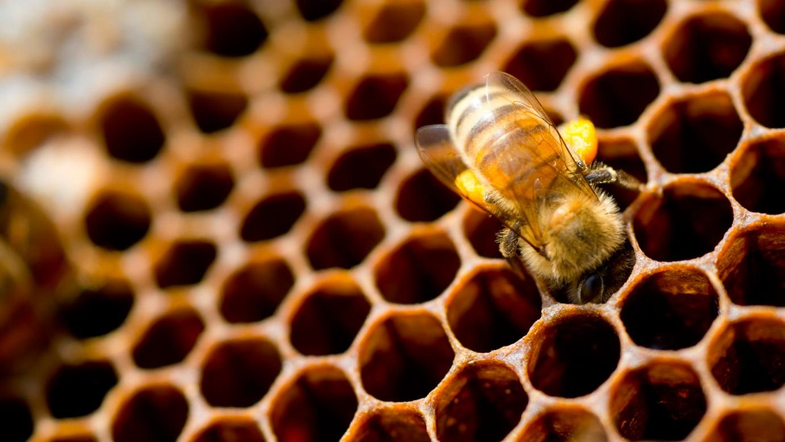

Keeps beautifully: how to store honey (and what to do when it crystallizes)
Honey is one of the longest-lasting foods in your kitchen. Store it right and a jar will keep its flavor for years. And if it turns thick and grainy one day, that's not a problem — it's a sign of real, raw honey.

Why honey lasts so long
Archaeologists digging in ancient Egyptian tombs have turned up pots of honey thousands of years old and still preserved. Honey keeps so well because of how the bees make it:
- Very little water. Bees fan their wings over the nectar to dry it down until it's mostly sugar. Germs that spoil food need water, and honey doesn't leave them enough to survive.
- Natural acidity. Honey is surprisingly acidic, with a pH of roughly 3 to 4.5. That acidity is another hurdle for anything trying to grow in it.
- A little help from the bees. Bees add an enzyme called glucose oxidase, which produces tiny amounts of hydrogen peroxide in the honey.
The National Honey Board says sealed honey can stay stable for decades. Over time it may darken, lose some aroma, or crystallize, so for practical purposes a shelf life of about two years is often given.
How to store it
- Room temperature is best. A kitchen cupboard or pantry shelf is ideal. Keep it away from the stove and out of direct sunlight, since heat slowly dulls honey's flavor.
- Skip the fridge. Cold temperatures speed up crystallization.
- Keep the lid on tight. Honey naturally pulls moisture out of the air. Here in South Louisiana, where the air is often muggy, that matters. If honey takes in too much water, its natural yeasts can wake up and start it fermenting.
- Use a clean, dry spoon. A wet spoon, or crumbs from a buttered knife, adds the moisture and specks that honey is better off without.
Why raw honey crystallizes
Honey holds more sugar than its water can keep dissolved. Sooner or later, some of that sugar comes out of the liquid as tiny crystals. Honey's two main sugars behave differently. Fructose stays dissolved easily, but glucose doesn't. The glucose is what slowly forms grains, until the whole jar turns thick and cloudy.
Raw honey usually crystallizes sooner than store-bought honey, and that's a good thing. Unfiltered honey still carries tiny bits of pollen and beeswax, and each one gives a crystal a place to start. Heavily filtered honey has had most of those removed, which is why it can stay runny on a grocery shelf for so long.
How fast it happens depends on the flowers. Honeys higher in glucose crystallize quickly; honeys higher in fructose can stay liquid for a long time. Since our wildflower honey changes with each season's blooms, one harvest may set up faster than another.
Crystallized honey is completely safe. It doesn't mean the honey is old, bad, or had sugar added. Many people prefer it thick: it spreads on a warm biscuit without dripping and stays put on a spoon.
How to bring it back to liquid
If you'd rather have it pourable again, go low and slow:
- Take the lid off the glass jar and set the jar in a pot of warm water. It should feel like hot tap water, not boiling.
- Let it sit, stirring now and then, until the crystals dissolve. Depending on how solid it is, this can take a while.
- Warm it until every crystal is gone. Any crystals left behind give new ones a head start.
- Dry the jar, put the lid back on, and store it at room temperature.
A few don'ts
- Don't microwave it or boil it. High heat scorches honey and dulls its flavor and aroma. Heat damage adds up over time, so warm only as much as you need.
- Don't put a plastic container in hot water. Spoon the honey into a glass jar first.
- Don't keep honey that smells sour or foams. A sour or boozy smell, bubbles, or foam on top means moisture got in and the honey has started to ferment.
The bottom line
Keep it sealed, keep it dry, and keep it at room temperature, and a jar of honey will keep beautifully. If it crystallizes, take it as proof you've got the real thing. Then enjoy it thick, or give it a warm bath.
Sources
- National Honey Board. Honey storage and crystallization guidance. honey.com
- Geiling N. The science behind honey's eternal shelf life. Smithsonian Magazine, 2013. smithsonianmag.com
- Food and Agriculture Organization of the United Nations. Value-added products from beekeeping, Chapter 2: Honey. fao.org
- National Honey Board. Honey crystallization (fact sheet), via the Beer Judge Certification Program. bjcp.org
- National Honey Board. Shelf life and stability of honey (fact sheet), via the Beer Judge Certification Program. bjcp.org
- Southern Cross University. Honey crystallisation fact sheet, 2024. scu.edu.au
Stock the pantry
Raw, unaltered wildflower honey from Acadiana hives.
More from Good to Know: A spoonful for a cough → · Darker honey, more antioxidants? →